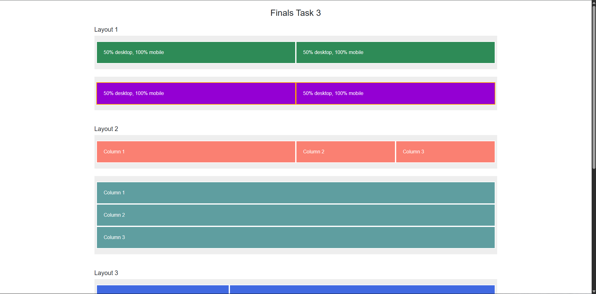
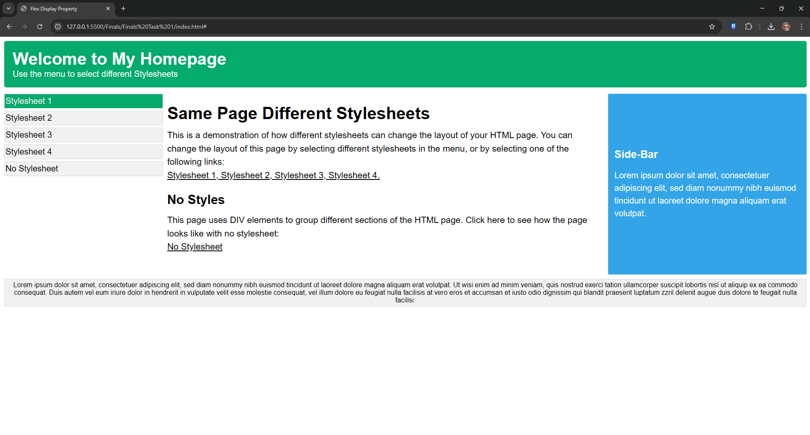
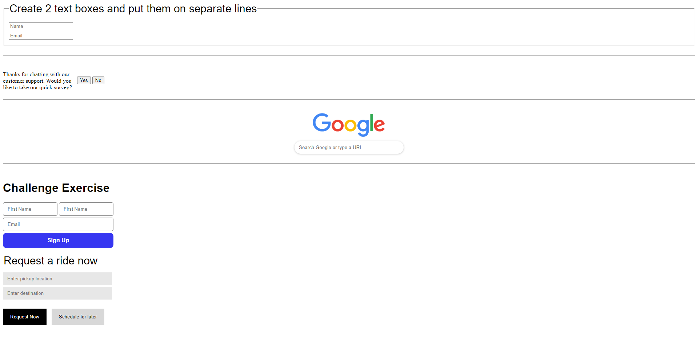
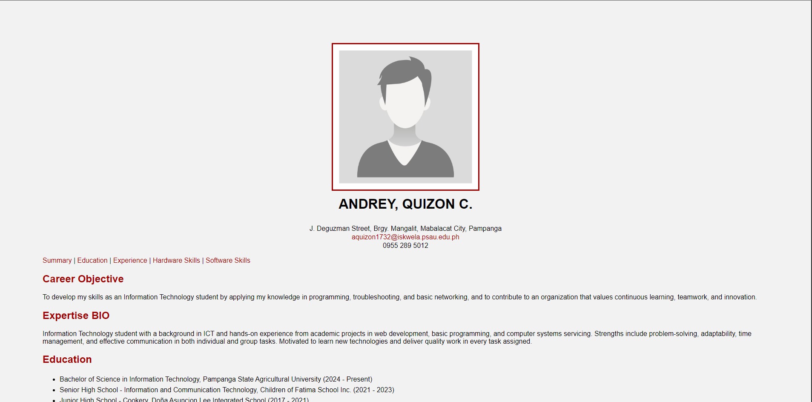
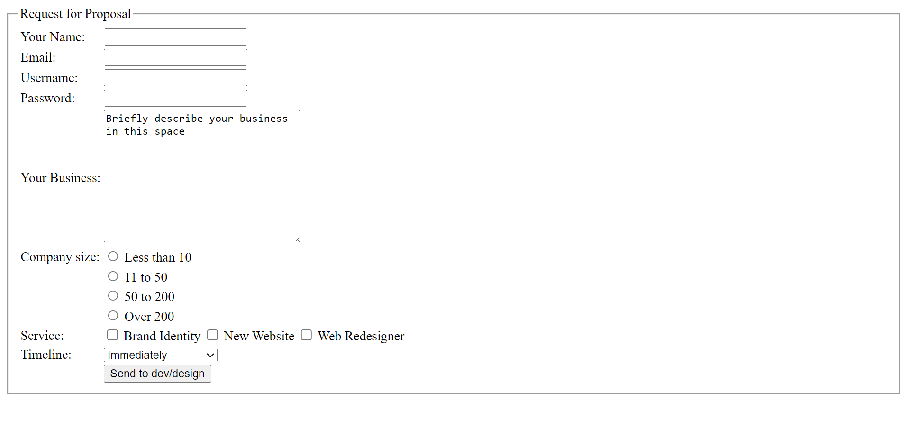
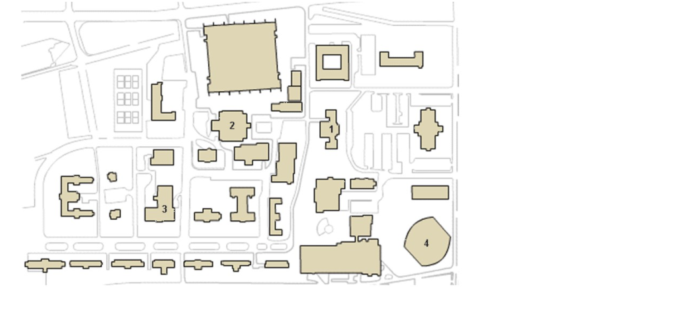
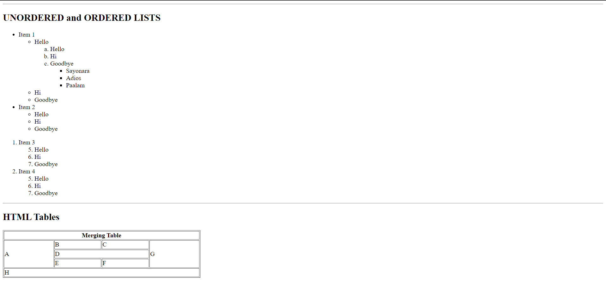
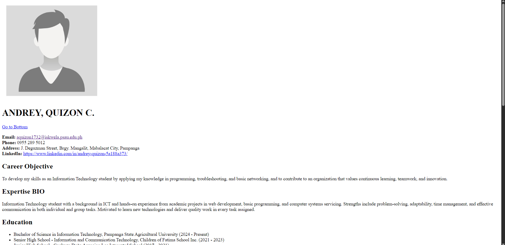

Finals Tasks

This activity helped me learn how to use Bootstrap’s grid system to create simple responsive layouts for mobile and desktop. I practiced using rows, columns, and breakpoints, and also added basic styling with internal CSS for the card design.
Sample Code
This activity involved creating a responsive webpage layout using Flexbox and external CSS stylesheets. The same HTML structure was designed to support multiple visual themes that can be switched dynamically. The layout was built to adapt across desktop, tablet, and mobile screen sizes using appropriate breakpoints. This exercise helped demonstrate how separation of structure, styling, and responsiveness can be achieved in a practical web design setup.
Sample CodeMidterm Tasks

This task focuses on applying CSS display properties to control the layout of elements. The objective is to position elements using properties such as block, inline-block, and alignment techniques. It includes creating text boxes, aligning buttons, and recreating simple UI layouts like forms. This task helps in understanding how different display values affect the structure and positioning of elements on a webpage.
Sample Code
This task enhances the previously created HTML resume by applying CSS styling. The objective is to improve the visual presentation of the webpage using internal CSS, class selectors, and ID selectors. Styles such as background color, margins, fonts, borders, and link behaviors are applied. This task demonstrates how CSS is used to control layout, design, and user interaction.
Sample Code
This task focuses on designing forms using various HTML form elements such as input fields, buttons, and labels. The objective is to collect user input effectively while organizing the layout using tables for proper alignment. This task helps in understanding how forms function as a key component in web applications.
Sample Code
This task involves creating an interactive image map using HTML. The objective is to define clickable areas within an image that redirect users to different links. Coordinates are used to map specific regions of the image, allowing multiple links to be embedded within a single image. This task enhances understanding of user interaction and navigation design in web development.
Sample Code
This task aims to demonstrate the use of ordered and unordered lists in HTML, including nested lists. The objective is to properly structure hierarchical information by placing lists inside other lists. This helps in understanding how to organize content logically and improve readability using list elements.
Sample Code
This task focuses on creating a personal resume using basic HTML tags. The objective is to demonstrate proper use of semantic elements such as headings, paragraphs, lists, and images. The resume includes personal information, educational background, skills, and experience. The task also emphasizes correct structuring of content using heading tags and organizing data using bullet lists for clarity and readability.
Sample Code